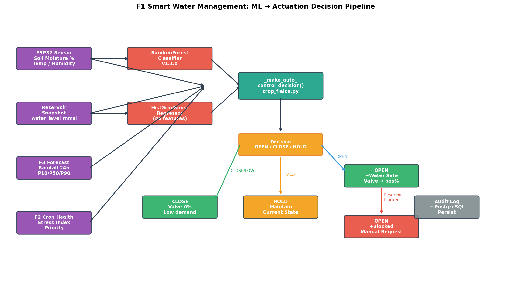
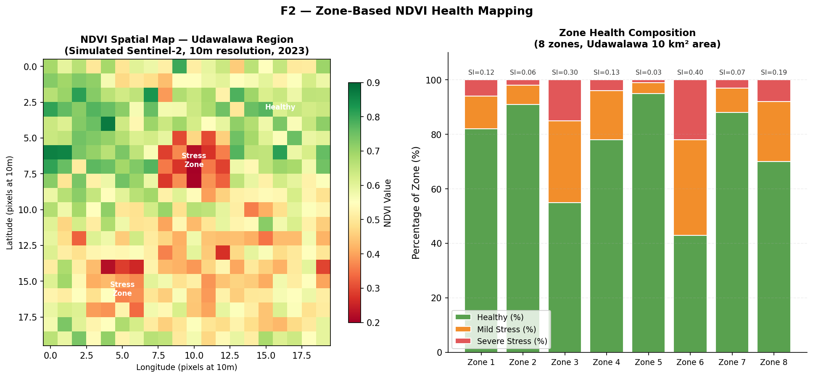
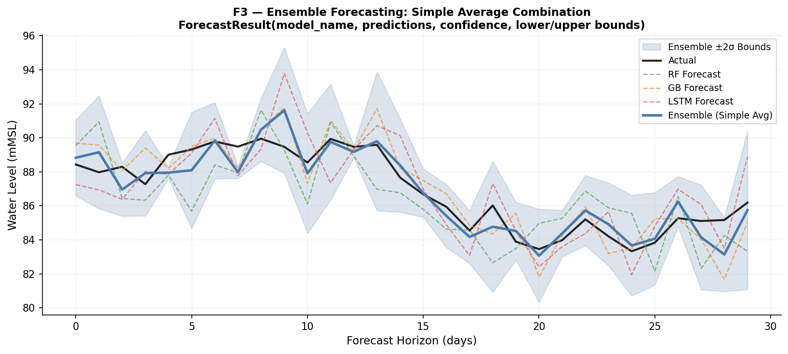
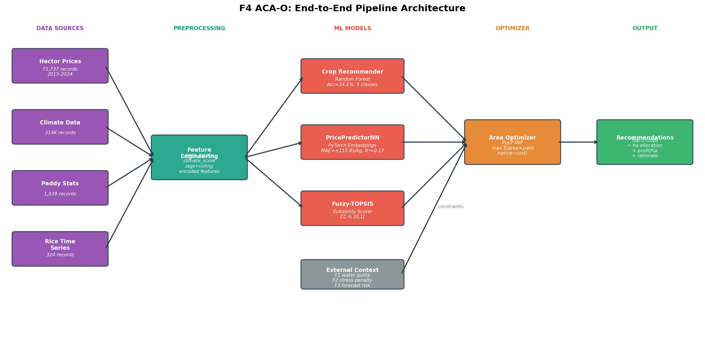

11,687
Udawalawe daily records
4th year Software Engineering research project
An integrated decision-support system for Sri Lankan irrigation schemes, combining IoT sensing, crop health analytics, water forecasting, and adaptive crop area planning under fixed water quotas.
Udawalawe daily records
Sentinel-2 analysis scale
Retail price observations
Day forecast horizon
Project architecture
The platform is more than a dashboard. Each service provides a decision signal that improves another service: stress influences irrigation, forecasts influence optimization, and field telemetry keeps the whole plan grounded.
Field telemetry, crop thresholds, reservoir safety gates, and ML predictions are fused into valve actions for quota-based irrigation fields.
Remote-sensing zone health and plant image diagnosis identify stress early enough to prioritize irrigation and adjust crop planning.
Reservoir and rainfall forecasts expose drought, flood, and uncertainty signals before they affect field schedules or seasonal plans.
Crop suitability, price signals, water quotas, field stress, and policy rules are combined into practical crop-area recommendations.
Evidence first
The project evidence is grounded in generated research outputs from the repo: hydrology records, NDVI health maps, ensemble forecasts, price modelling, and crop allocation architecture.
F1 - RMSE 0.7108 MCM
Release prediction
F2 - 95.43% val accuracy
Disease classification
F3 - RMSE 2.8763 mMSL
Best current forecast
F4 - MAE Rs. 115.66/kg
Price prediction




Submission structure
Integrated project overview and research highlights.
Literature, gap, problem, objectives, methodology, and technologies.
Assessment timeline with dates, marks, and details.
Project-wide and individual final submission files.
Proposal, progress, final, and stream deep-dive decks.
Member profiles, stream ownership, and contact details.